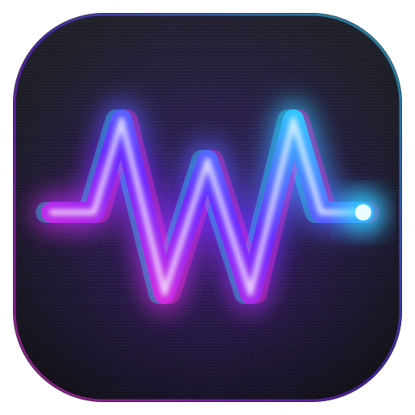

WACK MUZIC
● Underground music studio · Free
MAKE IT LOUD.
WACK MUZIC is a dark-room production studio with 50+ instruments. Record your voice or beatbox and turn it into kicks, snares and melodies. Pitch any sound into an instrument, Auto-Tune it and stack studio effects. Generate whole songs from a genre and mood, then mix and export.
Instruments
Click one to play it full-screen, or add it to a song in the Studio.
Learn in minutes
Each lesson opens the Studio and highlights exactly what to press.